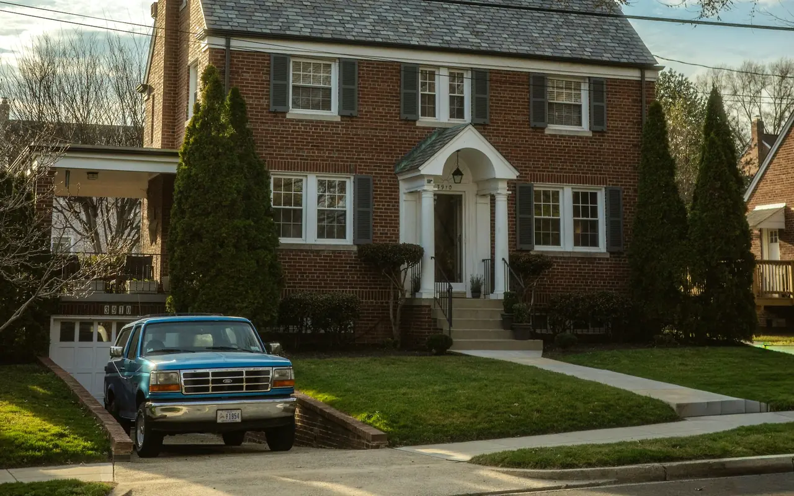

Cedarhurst NY · 11516 · Nassau County
Garage Door Repair Cedarhurst, NY
Same-day garage door repair throughout Cedarhurst NY 11516. Broken spring, snapped cable, failed opener, or door off track — we arrive fast with a fully stocked truck, provide a free written estimate before touching anything, and back every repair with a written warranty. Evenings, weekends, and holidays available.
- Same-Day Service
- Free Written Estimate
- Written Warranty
- South Shore Specialists
Garage Door Service in Cedarhurst
Cedarhurst NY 11516 — What We See Every Day
Cedarhurst is one of the most established Five Towns communities — a dense, walkable village where residential streets run between Central Avenue's commercial district and the South Shore waterfront near Reynolds Channel. The housing stock reflects this history: a mix of postwar colonials and ranches from the 1940s through the 1960s, alongside renovated and newer construction on the more desirable blocks closer to the water.
The garage doors we work on in Cedarhurst reflect this range. Older homes often have original or once-replaced torsion spring systems that are approaching the end of their service life — many haven't been serviced since the previous owner. Renovated properties frequently have heavier custom doors with carriage house styling that require precise spring calibration. And homes along the southern edges of Cedarhurst, near the Jamaica Bay waterfront, deal with accelerated salt air corrosion that shortens the life of cables, springs, and hardware faster than inland properties.
When you call the Cedarhurst South Shore line at (516) 612-9317, you reach a technician who works this area regularly and arrives with the parts most likely needed for your specific situation — torsion springs in the sizes common to Cedarhurst-era homes, galvanized cables for South Shore proximity, and opener parts for the brands most frequently installed in Nassau County.
Cedarhurst South Shore Note
Cedarhurst properties south of Broadway and near the Jamaica Bay waterfront are within salt air range of Reynolds Channel. This accelerates corrosion on steel lifting cables, spring coils, and exposed hardware. We recommend galvanized or stainless steel cables for these properties and semi-annual lubrication rather than the annual schedule appropriate for inland homes. Ask us about coastal-rated hardware upgrades when you call.
| Torsion Spring Replacement | $295 |
|---|---|
| Extension Spring Replacement | $145 |
| High-Cycle Spring Upgrade | $380 |
| Cable Replacement (both) | $125 |
| Stainless Cable (coastal) | $155 |
| Roller Replacement | $35/roller |
| Track Realignment | $175 |
| Opener Gear Kit | $130 |
| Safety Sensor Repair | $75–$150 |
| Annual Tune-Up | $99 |
| Written Estimate | FREE |
Starting prices. Your exact price is confirmed in the free written estimate before any work begins.
(516) 612-9317 — Same DayServices in Cedarhurst NY 11516
What We Repair & Install in Cedarhurst
Spring Repair
Torsion and extension spring replacement same day in Cedarhurst. The loud bang that woke you up at 6am was the torsion spring breaking under tension. Do not operate the opener — call (516) 612-9317 immediately. We carry springs for Cedarhurst-era door sizes on every truck.
Cable Replacement
Lifting cable replacement in Cedarhurst same day. For South Shore Cedarhurst properties we recommend galvanized or stainless steel cables over standard cables — the salt air from Reynolds Channel shortens standard cable life significantly. Both cables always replaced together.
Roller & Track
Worn metal rollers are the most common source of grinding noise in Cedarhurst garages. We upgrade to sealed nylon ball-bearing rollers that are dramatically quieter. Track realignment and hardware tightening included on every roller service call.
Opener Service
Same-day opener repair for all major brands in Cedarhurst. Stripped gear, failed sensors, lost remote — diagnosed and fixed the same day. New LiftMaster belt drive installations with battery backup recommended for Cedarhurst attached garages and South Shore storm outages.
New Door Installation
New door installation in Cedarhurst with free in-home estimate. Carriage house style is the most requested for Cedarhurst colonials. For South Shore properties, galvanized steel or aluminum construction is recommended. Most installations completed in a single day.
Annual Tune-Up
Annual or semi-annual tune-up for Cedarhurst homes. Full 22-point inspection, lubrication, safety tests, and written condition report. Semi-annual recommended for South Shore Cedarhurst properties near Jamaica Bay and Reynolds Channel where salt air accelerates hardware wear.
Cedarhurst Homeowner Guide
What Cedarhurst's Homes Mean for Your Garage Door
Three kinds of houses, three different ways a garage door wears out. Here is what to watch for on your block.
Postwar Colonials & Ranches
Homes from the 1940s through the 1960s often still run on original or once-replaced torsion springs. If yours hasn't been serviced since you bought the house, have the spring system checked before it fails on its own schedule.
- Gaps or stretched coils in the spring
- Door that feels heavy or slams shut
- Opener straining or reversing mid-travel
Renovated Homes & Carriage House Doors
Heavier custom doors need springs calibrated to their actual weight. A door that isn't balanced makes the opener do the lifting, which wears out gears and motors early.
- Uneven gaps at the floor when closed
- Door drifts up or down when stopped halfway
- Opener louder or slower than it used to be
South of Broadway, Near the Water
Salt air from Reynolds Channel and Jamaica Bay attacks steel cables, spring coils, and exposed hardware. Plan on semi-annual lubrication, and look over the cables each season.
- Rust or broken strands on lifting cables
- Orange staining on springs and brackets
- Battery backup on the opener for storm outages
Cedarhurst Garage Door FAQ
Questions from Cedarhurst Homeowners
Real questions we hear regularly on service calls throughout Cedarhurst NY 11516.
Who repairs garage doors in Cedarhurst NY?
Five Towns Garage Door provides same-day garage door repair throughout Cedarhurst NY 11516. Call the South Shore line at (516) 612-9317 — a technician who works this area regularly will answer. We typically arrive within 2–4 hours, call 30 minutes before arrival, and provide a free written estimate before any work begins.
Why does my garage door rust so fast in Cedarhurst?
Cedarhurst sits within a mile of Reynolds Channel and Jamaica Bay. Salt-laden air from the South Shore waterfront accelerates oxidation on steel lifting cables, spring coils, and exposed hardware — sometimes cutting the service life in half compared to inland properties. We recommend galvanized or stainless steel cables, zinc-coated springs, and semi-annual lubrication instead of annual for Cedarhurst properties. Call (516) 612-9317 to discuss coastal-rated hardware options.
How much does garage door repair cost in Cedarhurst?
Extension spring repair starts from $145. Torsion spring replacement starts from $295. Cable replacement starts from $125. Stainless steel cables for South Shore Cedarhurst properties start from $155. Free written estimate before any work — the price we quote is what you pay. Call (516) 612-9317.
Do you work evenings and weekends in Cedarhurst?
Yes — available evenings, weekends, and holidays throughout Cedarhurst NY 11516. Call (516) 612-9317 any time. A broken door on a Saturday morning or a spring that goes on a holiday weekend — we answer and we arrive the same day.
My garage door spring just broke with a loud bang. What should I do?
Do not operate the opener. That bang was the torsion spring breaking under tension, and without it the door is too heavy for the opener to lift safely. Call (516) 612-9317 — we carry springs for Cedarhurst-era door sizes on every truck and replace them the same day.
Also Serving
Other Five Towns We Service
Google Reviews
What Customers Say
4.7 out of 5 stars from 15 Google reviews (as of September 2026). Reviews are quoted as written.
I needed to find a reliable garage door supplier to look at our dented storefront entry gate. They helped me pick out heavy-duty commercial garage doors that handle constant daily use without jamming up. It was a completely straightforward experience getting this sorted out in Cedarhurst, NY.
Both of my cars were stuck in the garage and I called at 8 AM expecting someone to not be able to get there until late or the next day. A service technician showed up within an hour after I had called. He was very professional and explained everything in depth. Without the typical pushy attitude, he fixed my garage door at an affordable price. I would definitely recommend Five Towns Garage Doors in Nassau County. Thank you.
The spring of my garage broke late at night. I called first thing the next morning and someone came within a couple hours and quickly fixed it. They were great! I would highly recommend this Nassau County garage doors repair company to anyone.
Garage Door Repair Cedarhurst NY 11516
Same-day service · Free written estimate · Written warranty · Evenings & weekends · South Shore specialists
Main line: (516) 490-0931